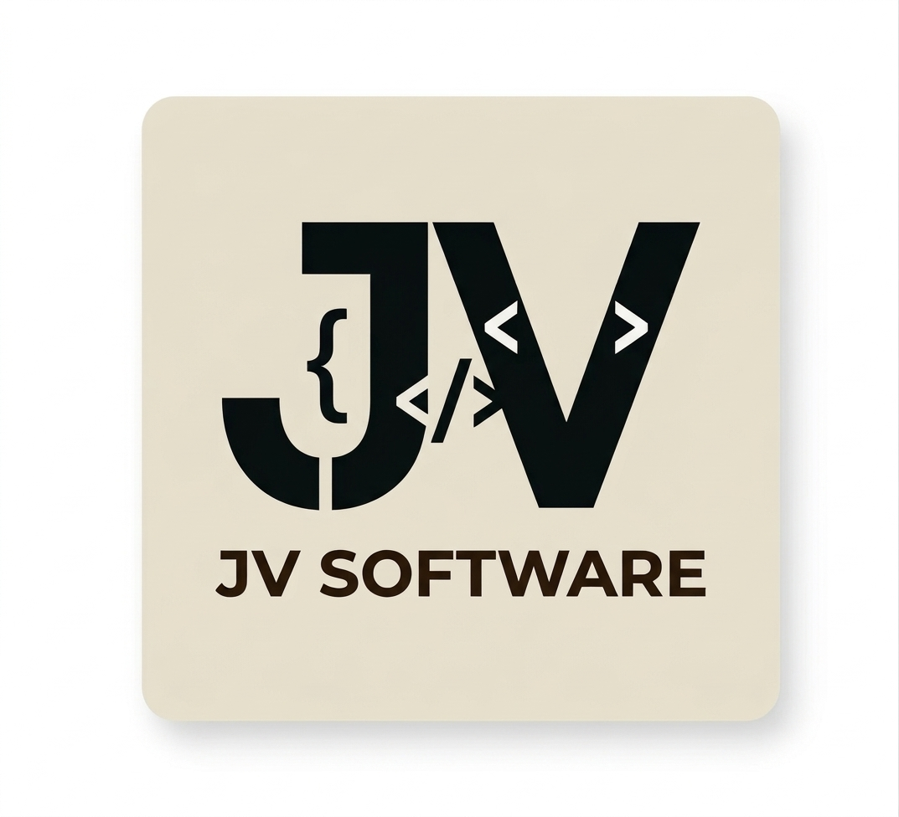

Joao De Jesus
.png)

.png)


Olá! Sou João, um entusiasta da tecnologia e desenvolvedor em formação, apaixonado por transformar ideias em projetos reais por meio da programação.
Estou sempre buscando aprender novas tecnologias, explorar possibilidades e aprimorar minhas habilidades.Tenho interesse no desenvolvimento de sites,
criação de jogos e automação, utilizando a programação como uma ferramenta para resolver problemas, criar experiências interativas e dar vida a novas
ideias.
Acredito que cada projeto é uma oportunidade de aprender, inovar e evoluir. Por isso, gosto de experimentar, enfrentar desafios e buscar soluções criativas,
sempre procurando melhorar meus conhecimentos e a qualidade do meu trabalho.
Meu objetivo é continuar evoluindo como desenvolvedor, construir projetos cada vez mais completos e transformar minha criatividade em soluções que faç-
am a diferença.
Muito além de escrever código, quero transformar ideias em realidade.


Jogo de terror desenvolvido na Godot, inspirado em jogos de sobrevivência com câmeras de vigilância. O jogador deve monitorar diferentes ambientes, administrar seus recursos e enfrentar desafios para sobreviver às noites dentro da escola.

Projeto desenvolvido em equipe por estudantes do 2º e 3º anos do Ensino Médio, representando o Colégio Helena Wysocki em uma competição entre escolas. A iniciativa busca apresentar ideias e soluções criativas, valorizando o trabalho colaborativo e o protagonismo estudantil.

Plataforma educacional com inteligência artificial, desenvolvida com o objetivo de auxiliar os estudantes do Colégio Helena Wysocki no processo de aprendizagem. A proposta é oferecer suporte aos estudos, facilitar o acesso ao conhecimento e contribuir para o desenvolvimento dos alunos.

Página web desenvolvida individualmente como parte de um trabalho de Front-end, com o objetivo de aplicar e aprimorar conhecimentos em HTML, CSS e JavaScript. O projeto envolve a construção da estrutura da página, a personalização do design e a implementação de elementos interativos.

Projeto idealizado para promover a inclusão digital de pessoas idosas, oferecendo apoio para que aprendam a utilizar tecnologias e ferramentas digitais do cotidiano. A proposta também busca conectar jovens e adultos interessados em trabalhos freelancer com idosos que necessitam desse auxílio, criando oportunidades de aprendizagem, colaboração e geração de renda.